1. Lignes et Réflexions
© J.L. Noullet 2013
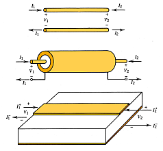
On peut considérer qu'un petit segment de conducteur possède une inductance proportionnelle à sa longueur
et constitue avec l'autre conducteur une capacité également proportionnelle à sa longueur.1.1 Modèle de la ligne sans pertes
On s'intéresse à la transmission du signal par une ligne homogène composée de 2 conducteurs, qui peuvent être par exemple :- parallèles, symétriques
- coaxiaux
- un conducteur plat parallèle à un plan de masse (microstrip, PCB RF, PCB digital)
Alors on peut modéliser la ligne comme une cascade de cellules LC, dont on fait tendre la longueur individuelle vers zéro pour rendre compte de la continuité du dispositif.
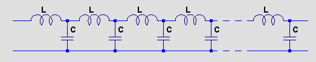
(On peut en plus représenter les pertes ohmiques par une résistance série et les pertes diélectriques par une conductance en parallèle, chacune proportionnelle à la longueur du segment, mais dans cette étude nous nous limitons aux lignes sans pertes.)
Cette méthode dite "équation du télégraphiste" aboutit à un ensemble de résultats dont la démonstration se trouve dans les cours fondamentaux d'électronique. On retiendra l'essentiel, pour une ligne sans pertes :
- contrairement au circuit LC discret, la ligne ne se comporte pas comme un filtre passe-bas (la fréquence de résonance des cellules LC est rejetée à l'infini)
- l'impédance en régime impulsionnel de chaque extrémité de la ligne, dite impédance caractéristique, est résistive,
et dépend de la géométrie de la ligne mais pas de sa longueur :
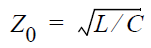 - le signal se propage à une vitesse uniforme inférieure à la vitesse de la lumière et dépendant essentiellement des constantes diélectrique (permittivité) et magnétique (perméabilité) du milieu entourant les conducteurs.
1.2 Adaptation d'impédance
Lorsqu'une extrémité de la ligne est connectée à un dipôle dont l'impédance est égale à l'impédance caractéristique de la ligne, il n'y a pas de discontinuité de la propagation, tout comme entre deux segments adjacents de la ligne.On dit qu'il y a adaptation d'impédance (impedance matching).
Cette situation concorde avec la condition "puissance maximale transmise" bien connue comme conséquence des modèles de générateur de Thévenin et de Norton. Les simulateurs de circuit du type SPICE supportent un modèle de ligne sans perte avec 2 paramètres : l'impédance caractéristique et le temps de propagation, qui est la conséquence électrique de la longueur.
Nous allons utiliser d'abord le simulateur LTSPICE de Linear Technology pour illustrer ce document.
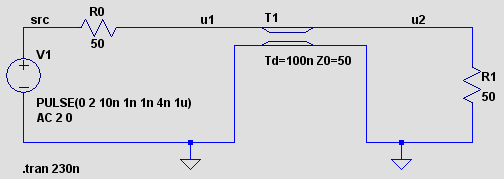
La simulation en mode transitoire ("tran") confirme qu'une impulsion de 1V s'est bien transmise d'un bout à l'autre de la ligne :
Exemple N°1
- la source produit une impulsion de 2 Volts avec une durée de 5 ns
- l'impédance est adaptée aux deux extrémités de la ligne
- l'entrée de la ligne se comporte comme une charge de 50 Ohms pour la source
- la sortie de la ligne se comporte comme une source d'impédance de 50 Ohms
- l'énergie absorbée par la ligne entre t=10 ns et t=16ns a été stockée puis restituée à l'autre extrémité entre t=110 ns et t=116ns.
- l'extrémité droite de la ligne se comporte comme une source de f.e.m. 2 Volts par application du principe de conservation d'énergie
1.3 Simple réflexion d'une impulsion
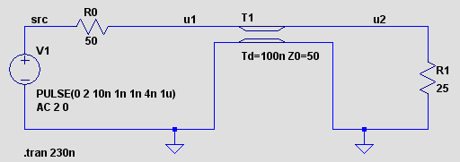
Essayons de prédire ce qui va se passer :
Exemple N°2
- la source produit une impulsion de 2 Volts avec une durée de 5 ns
- l'extrémité droite de la ligne est chargée par une impédance non adaptée de 25 Ohms
- l'entrée de la ligne se comporte toujours comme une charge de 50 Ohms pour la source, et elle absorbe la même énergie que dans l'exemple 1 (loi de causalité, relativité restreinte)
- la sortie présentant une impédance de 50 Ohms chargée par 25 Ohms, l'amplitude de l'impulsion sera 2.0*(25/(50+25)) soit 0.666 Volts, avec une énergie inférieure
- pour équilibrer le déficit énergétique, on suppose qu'une impulsion réfléchie part en sens inverse, dont on estime l'amplitude à -0.333 Volts (th. de superposition au voisinage de l'extrémité droite de la ligne)
- on vérifie le bilan énergétique : (1)2/50 = (0.666)2/25 + (0.333)2/50
L'expérience confirme nos hypothèses, et on observe l'arrivée à gauche de l'impulsion réfléchie après un aller-retour de 200 ns.
On appellera Coefficient de réflexion en mode impulsionnel, noté Lambda ou S le rapport amplitude réfléchie (retour) / amplitude incidente (aller), en généralisant le calcul qu'on a fait ci-dessus, on trouve l'expression suivante :
Cette animation montre l'arrivée d'une impulsion à la frontière de deux milieux de propagation différents avec un coefficient de réflexion de -0.333.
(source : Wikipedia)
Ce type de phénomène a été étudié en physique des vibrations (acoustique, mécanique, hydrologie, sismologie) et en optique.
La réflexion partielle est aussi appelée dispersion ou scattering.
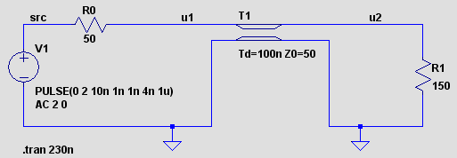
Essayons de prédire ce qui va se passer :
Exemple N°3
- coté gauche, rien n'a changé
- l'extrémité droite de la ligne est chargée par une impédance non adaptée de 150 Ohms
- à l'entrée de la ligne il se passe la même chose que dans l'exemple 2
- la sortie présentant une impédance de 50 Ohms chargée par 150 Ohms, l'amplitude de l'impulsion sera 2.0*(150/(50+150)) soit 1.5 Volts, soit plus qu'à l'entrée, cependant l'énergie est inférieure
- pour équilibrer le déficit énergétique, on suppose encore qu'une impulsion réfléchie part en sens inverse, cette fois positive, avec une amplitude de 0.5 Volts
- on vérifie le bilan énergétique : (1)2/50 = (1.5)2/150 + (0.5)2/50
On observe que le coefficient de réflexion peut être positif ou négatif, conformément à la l'expression obtenue à l'étape précedente.
1.4 Généralisation du coefficient de réflexion
Exemple N°4
On reprend le schéma de l'exemple N°1 (25 Ohms à droite), et on réduit la longueur de la ligne à 1 ns au lieu de 100 ns.La sommation de l'impulsion incidente et de l'impulsion réfléchie qu'on avait décrite au voisinage de l'extrémité droite de la ligne s'étend à présent jusqu'à l'extrémité gauche, et on observe un palier à 0.666V, pendant l'intervalle de temps où les deux impulsions (incidente et réfléchie) se recouvrent.
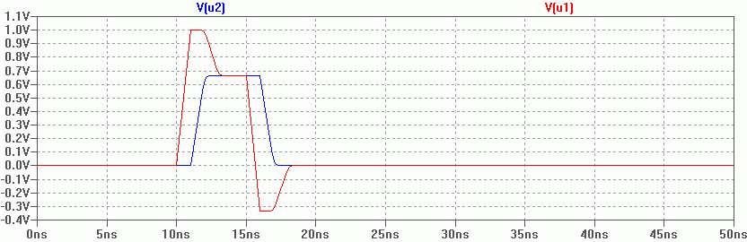
Exemple N°5
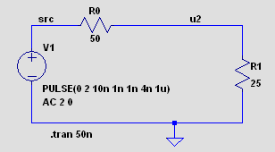
Cependant, le coefficient de réflexion peut conserver son sens, bien qu'on ne puisse plus distinguer
physiquement un signa incident et un signal réflechi :
- on continue à réduite la longueur de la ligne
- on arrive à zéro, il n'y a plus de ligne, seulement un "pont résistif"
- l'obtention d'un impulsion de 0.666 Volts ne fait aucun doute
- on définit le signal incident comme celui qu'on aurait dans les conditions de puissance maximale
- on définit le signal réfléchi comme différence entre le signal observé et le signal incident
- le coefficient de réflexion est toujours le rapport signal réfléchi / signal incident
- l'impulsion incidente fait +1.0 V,
- le coefficient de réflexion S = (25-50)/(25+50) = -1/3
- l'impulsion réflechie -0.333 V
- l'impulsion résultante 1 - 0.333 = 0.666 V
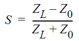
Cela peut paraître bien compliqué pour résoudre le simple problème du "pont résistif", cependant
l'utilisation du coefficient de réflexion comme moyen de décrire la relation d'adaptation entre une source
d'impédance Z0 et une charge d'impédance ZL, qu'il y ait ou non interposition d'une ligne
de transmission, est un outil fondamental pour la conception des circuits RF.
1.5 Réflexion en mode AC
On va à présent considérer le même problème en régime sinusoïdal permanent.Puisque l'excitation du circuit est permanente, le signal incident et le signal réfléchi sont superposés en tous points de la ligne, et on ne peut observer que leur somme algébrique, qui dépend de leurs déphasages respectifs.
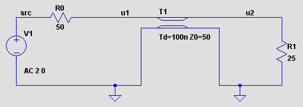
Essayons de prédire ce qui va se passer :
Exemple N°6
On reprend le schéma de l'exemple N°1 (25 Ohms à droite), avec une analyse AC de 0 Hz à 2.5 MHz (période 400 ns)- signal incident 1V, signal réflechi -0.333V
- à l'extrémité droite, les signaux incident et réflechi ont un déphasage nul, donc l'amplitude du signal sera constante soit 1 V - 0.333V = 0.666 V
- toujours à l'extrémité droite, la phase du signal (par rapport à la source) est proportionnelle à la fréquence (propriété du "retard pur"), et atteint 90° à 2.5 MHz (retard de 100 ns soit 1/4 période)
- à l'extrémité gauche la sommation du signal incident et du signal réfléchi avec un déphasage variable donne
un résultat variable, on considérera 2 cas particuliers :
- à 0 Hz, déphasage nul, amplitude 0.666V, phase zéro (on s'attend bien à ce que la ligne sans perte soit "transparente" en DC)
- à 2.5 MHz, déphasage 180° (retard de 2*100 ns soit 1/2 période), amplitude 1 V + 0.333 V = 1.333 V, phase zéro
- à 1.25 MHz, déphasage 90°, amplitude ((1)2 + (0.333)2)1/2 = 1.054 V, phase atan(0.333) = 18.4°
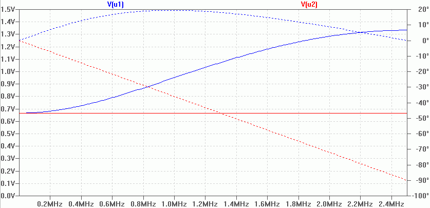
(les courbes en pointillé sont les phases)
On peut alors donner une expression du coefficient de réflexion à l'extrémité gauche S' en fonction du coefficient de l'extrémité droite S et de la fréquence w :
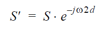
où l'exponentielle complexe représente un retard de 2 fois le délai de propagation d de la ligne.
Si on note Z'L l'impédance de l'entrée de la ligne, on peut exprimer S' et Z'L :
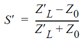 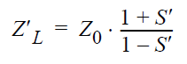
N.B. On a obtenu pour S' et Z'L des expressions complexes dépendant de la fréquence.
Ces expressions resteraient valables si l'impédance de charge à droite ZL n'était pas purement résistive (par exemple une combinaison d'éléments R, L et C, ou même une fonction complexe arbitraire de la fréquence).
1.6 Abaque de Smith
Considérons le problème pratique de la caractérisation en laboratoire de dipôles utilisés en RF (passifs ou semi-conducteurs).- La mesure directe d'impédance nécessite une source de courant idéale (impédance infinie) avec mesure de tension
- La mesure directe d'admittance nécessite une source de tension idéale (impédance négligeable) avec mesure de courant
De plus les circuits RF actifs (semi-conducteurs) sont rarement stables dans les conditions extrèmes telles que circuit ouvert ou court-circuit. Ce qui est par contre réalisable, c'est :
- tester le dipôle avec une source d'impédance Z0 au travers d'une ligne de même impédance
- mesurer le coefficient de réflexion (complexe) en fonction de la fréquence
Les logiciels de simulation utilisés en RF offrent des analyses similaires à ces mesures, pour illustrer la suite nous allons utiliser le simulateur Spectre de Cadence qui offre une analyse dite "S parameters" similaire à l'analyse AC de SPICE, mais avec des résultats traduits sous forme de coefficients de réflexion.
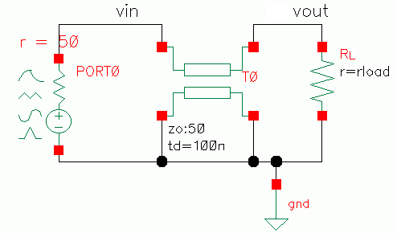
On reprend le schéma des exemples 2 et 3, mais la source est remplacée par un composant "port" dans lequel l'impédance de source est incluse, qui sert à préciser au simulateur :
Exemple N°7
On reprend le schéma des exemples 2 et 3, mais la source est remplacée par un composant "port" dans lequel l'impédance de source est incluse, qui sert à préciser au simulateur :
- la valeur de l'impédance de référence pour les calculs
- la paire de noeuds constituant le "port" du circuit sous test .
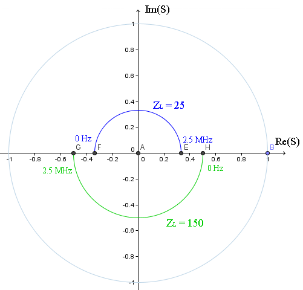
Résultat : la représentation du coefficient de réflexion S' (à l'entrée de la ligne) dans le plan complexe,
avec un balayage de fréquence de 0 HZ à 2.5 MHz, pour les deux valeurs d'impédance
de charge ZL résistive qui ont servi pour les exemples 2 et 3, soit 25 Ohms et 150 Ohms.
- le module du coefficient de réflexion est toujours inférieur à 1, le graphe est donc contenu dans le cercle unité,
- la fonction exponentielle qui représente le délai de la ligne se traduit par une rotation autour de l'origine (dans le sens négatif)
- le coeff de réflexion S du coté droit étant réel constant, le coeff du coté gauche S' se représente par un arc de cercle
- S' est réel pour 0 Hz et 2.5 MHz, comme on l'a vu avec l'exemple 6, et il repasserait par des valeurs réelles pour tous les multiples de 2.5 MHz si on continuait à augmenter la fréquence
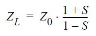
L'invention de Mr Phillip Hagar Smith a consisté a ajouter sur le plan complexe des graduations
permettant la lecture directe de la valeur complexe de ZL.
Le but initial était d'éviter de pénibles calculs manuels sur les valeurs complexes.
Même avec les moyens de calcul modernes, l'abaque de Smith reste apprécié pour représenter le comportement des circuits, tout comme le diagramme de Bode.
Le but initial était d'éviter de pénibles calculs manuels sur les valeurs complexes.
Même avec les moyens de calcul modernes, l'abaque de Smith reste apprécié pour représenter le comportement des circuits, tout comme le diagramme de Bode.
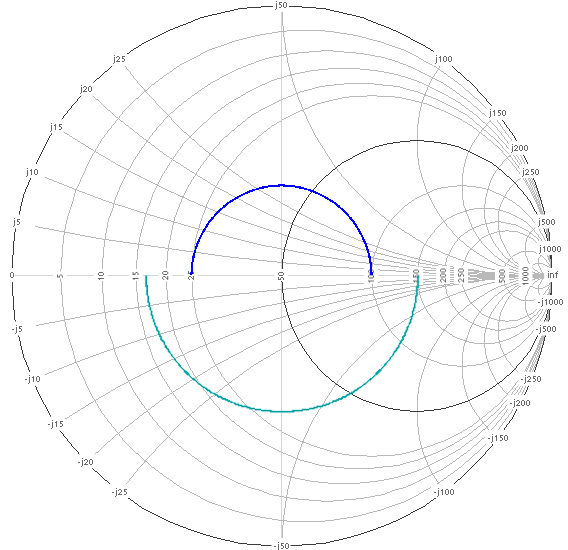
Sur cet abaque établi pour une impédance de référence de 50 Ohms :
On peut ausi utiliser une variante où les graduations permettent de lire les admittances :
- l'origine (centre du diagramme) représente l'impédance de référence
- chaque cercle centré sur l'axe horizontal représente les impédances ayant une même partie réelle, en particulier :
- le cercle passant par l'origine et le point (1,0) représente toutes les impédances dont la partie réelle vaut 50
- sur le cercle unité sont les impédances purement réactives (partie réelle nulle)
- chaque arc orthogonal aux précédents représente les impédances ayant une même partie imaginaire, inductive en haut, capacitive en bas
- sur l'axe horizontal sont les impédances réelles
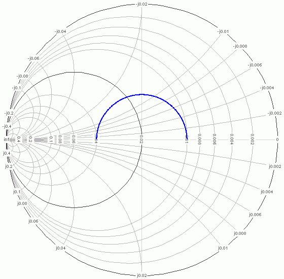
Ici on peut lire que la ligne chargée à 25 Ohms présente :
Les analyseurs vectoriels affichent éventuellement les résultats sous forme d'abaque de Smith :- une admittance réelle de 0.04 Siemens à 0 Hz
- une admittance réelle de 0.01 Siemens à 2.5 MHz
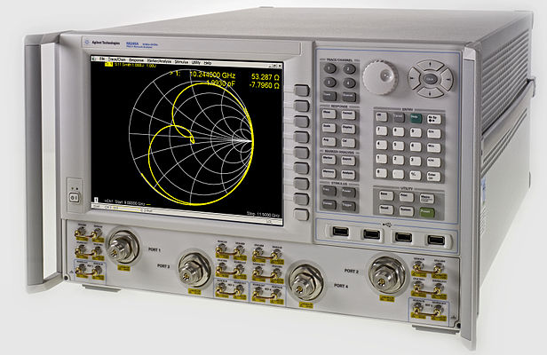
1.7 Ondes stationnaires
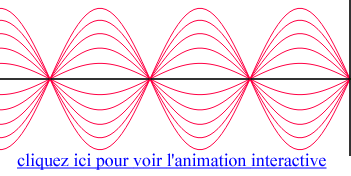
Lorsqu'il y a réflexion, en régime sinusoïdal permanent, en certains lieux fixes de la ligne l'onde réfléchie et l'onde incidente sont en phase
et leurs amplitudes s'additionnent, en d'autres points elles sont en opposition et leurs amplitudes
se soustraient.
- Les lieux d'amplitude minimale sont dits noeuds (nodes)
- Les lieux d'amplitude maximale sont dits ventres (antinodes)
Dans le cas général, le signal total peut se décomposer en :
- une onde stationnaire, dont l'amplitude est fonction de la distance au point de réflexion
- une onde progressive, dont l'amplitude est indépendante du lieu
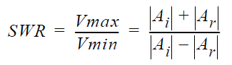
On caractérise le phénomène par le Rapport d'Ondes Stationnaires ou ROS (Standing Wave Ratio ou SWR), ou rapport de l'amplitude maxi sur l'amplitude mini du signal total lorsqu'on se déplace le long de la ligne.
On peut facilement exprimer SWR en fonction du module du coefficient de réflexion S (dans l'hypothèse d'une réflexion à une seule extrémité de la ligne):
On caractérise le phénomène par le Rapport d'Ondes Stationnaires ou ROS (Standing Wave Ratio ou SWR), ou rapport de l'amplitude maxi sur l'amplitude mini du signal total lorsqu'on se déplace le long de la ligne.
(Attention : par abus de langage, on appelle parfois "Taux d'ondes stationnaires" ou "TOS" la valeur absolue de S)
1.8 Résonances dans une ligne
Si un milieu de propagation unidimensionnel présente des réflexions aux 2 extrémités, l'amplitude des ondes stationnaires peut dépasser la valeur du signal d'excitation pour certaines fréquences, ce qu'on peut qualifier de résonance.Le phénomène est exploité depuis des milliers d'années dans les instruments de musique. Comme application plus récente on peut citer le laser.
Le phénomène peut se généraliser à un milieu à 2 dimensions (membrane vibrante, surface d'un liquide) ou a 3 dimensions (cavité résonnante).
Exemple N°8
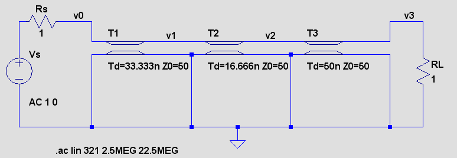On prend toujours une ligne de longueur 100ns, avec une mesure de tension v1 au premier tiers et une autre v2 à la moitié de sa longueur. Les deux extémités voient une impédance de 1 Ohm, soit un coefficient de réflexion de -0.96 de chaque coté. 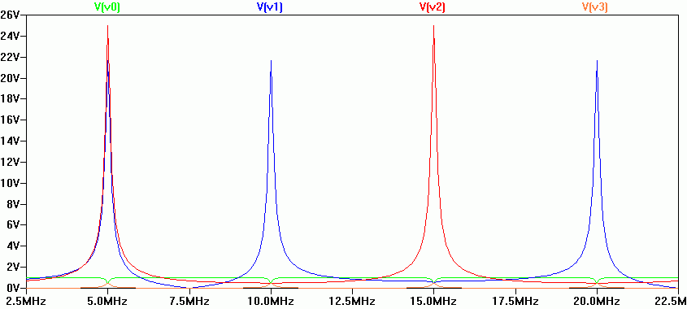
- à 5 MHz, on observe un maximum de tension au milieu, avec une surtension de 25 par rapport à la source, en effet à cette fréquence on a un ventre au milieu et un noeud à chaque extrémité de la ligne.
- à 10 MHz on observe un noeud au centre et à chaque extrémité, cependant que la prise du premiers tiers est proche d'un ventre (qui doit se trouver au premier quart)
- à 15 Mhz on observe un ventre au centre et un noeud au premier tiers
En zoomant sur v0 et v3, on observe qu'aux fréquences multiples de 5 MHz, les impédances d'entrée et de sortie de la ligne passent par la valeur 1 Ohm, ce qui correspond à un tour complet sur l'abaque de Smith.
Une ligne avec des coefficients de réflexion de même signe aux deux extrémités est dite demi-onde car sa fréquence de résonance fondamentale est celle pour laquelle sa longueur correspond à une demi longueur d'onde.
Exemple N°9
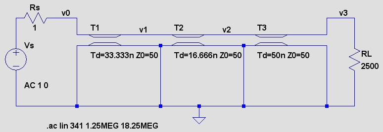On prend toujours une ligne de longueur 100ns, avec une mesure de tension v1 au premier tiers et une autre v2 à la moitié de sa longueur. L'extrémité gauche voit une impédance de 1 Ohm (S = -0.96), l'extrémité droite une impédance de 2500 Ohm (S = 0.96). 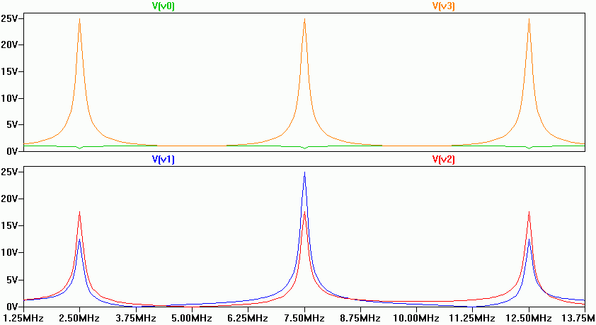
- à 2.5 MHz, on observe un noeud à l'entrée, un ventre à la sortie.
- à 7.5 MHz également, avec un autre ventre au premier tiers
- à 12.5 Mhz comme à 2.5 MHz
A ces fréquences, l'impédance d'entrée de la ligne est 1 Ohm, soit la transformée de RL=2500 Ohms par un demi tour (ou N+1/2 tours) sur l'abaque de Smith, et son impédance de sortie est 2500 Ohm de manière similaire.
A ces fréquences particulières, la ligne réalise l'adaptation d'impédance d'une source de 1 Ohm vers une charge de 2500 Ohms !
Une ligne avec des coefficients de réflexion de signes opposés aux extrémités est dite quart d'onde car sa fréquence de résonance fondamentale est celle pour laquelle sa longueur correspond à un quart de longueur d'onde.
Alors, pourquoi ces multiples fréquences de résonance ? la réponse ici (source Wikipedia)